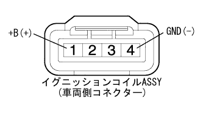
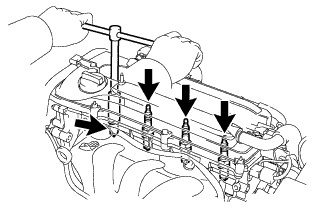
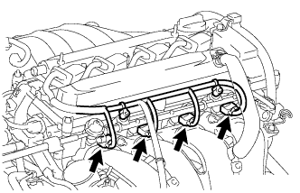
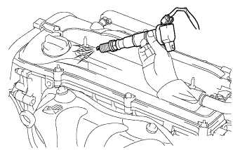

Ignition System (2AZ-FE) Function Inspection |
| 1. Inspect Ignition Coil Assembly |
 |
Input Voltage Inspection
Disconnect the ignition coil assembly connector.
Using SST (Toyota electrical tester), measure the voltage between the terminals of the vehicle side connector of the ignition coil assembly.
| Tester Connection | Condition | Standard |
|---|---|---|
| 1(+B) - 4(GND) | IG ON | 11 to 14V |
Turn IG OFF.
| 2. Inspect Ignition Coil and Spark |
Check DTC (see)
Inspect Spark
Disconnect the 4 ignition coil assembly connectors.
 |
Remove the 4 bolts and the 4 ignition coil assemblies.
 |
Remove the 4 spark plugs.
 |
Disconnect the 4 injector connectors.
Install the spark plug to the ignition coil assembly and connect the connector.
 |
Ground the spark plug.
Check that a spark occurs when the engine is cranked.
Connect the 4 injector connectors.
Install the 4 spark plugs.
|
Install the 4 ignition coil assemblies with the 4 bolts.
Connect the 4 ignition coil assembly connectors.
| 3. Inspect Spark Plug |
 |
| Manufacturer | Type |
|---|---|
| DENSO | SK20R11 |
| NGK | IFR6A11 |
Visual Inspection
Inspect the spark plug for damaged threads and damaged insulator.
Spark Plug Gap